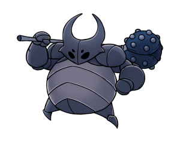
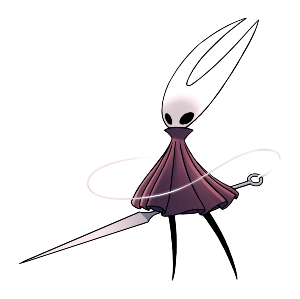
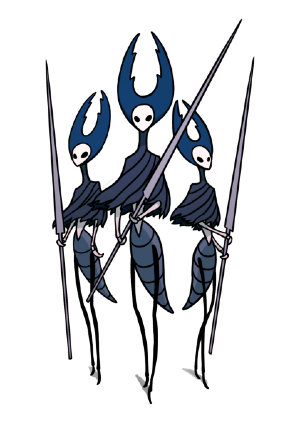
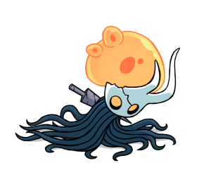
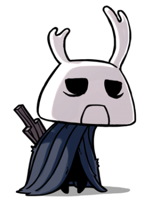

-
Falso Cavaleiro
Descrição
Um verme enlouquecido por uma força estranha. Habita uma concha blindada roubada. Criaturas fracas adoram roubar a força dos outros. Suas vidas são breves e amedrontadoras, e eles anseiam por ter o poder de dominar aqueles que os dominam.
-
Hornet
Descrição
Hábil protetora das ruínas de Hallownest. Empunha uma agulha e linha. Eu vi esta pequena criatura ágil. Eu pensei que ela era uma presa e a ataquei, mas com um flash ela me esfaqueou com seu ferrão voador e saiu correndo. Ela poderia ser... uma Caçadora?
-
Lordes Louva-a-Deus
Descrição
Os líderes da tribo Louva-a-Deus, e seus melhores guerreiros. Possuem ferrões-lança, e atacam com a velocidade de um raio A tribo Louva-a-Deus e os insetos de Hallownest não tinham amor uns pelos outros. No entanto, os Louva-a-Deus sobreviveram a seus rivais, e sua civilização perdura.
-
Receptaculo Quebrado
Descrição
Cadaver destroçado, reanimado por parasitas infectados A forma dessa criatura... eu vi algo parecido antes. Talvez mais do que uma vez. Parece um pouco com os insetos de Hollownest, mas não muito. De onde vêm esses viajantes vazios?
-
Zote o Poderoso
Descrição
Um cavaleiro auto-proclamado, sem renome. Empunha um ferrão que ele esculpiu de uma casca de madeira, chamado 'Terminador de Vidas'. Algumas criaturas são tão fracas e indefesas, tão tolas e irritantes que caçá-las não traz nenhum prazer.
-
A Radiância

Descrição
A luz, esquecida. A praga, a infecção, a loucura que assombra os cadáveres de Hallownest... a luz que grita dos olhos deste Reino morto. Qual é a fonte? Suponho que meros mortais como eu nunca entenderão.